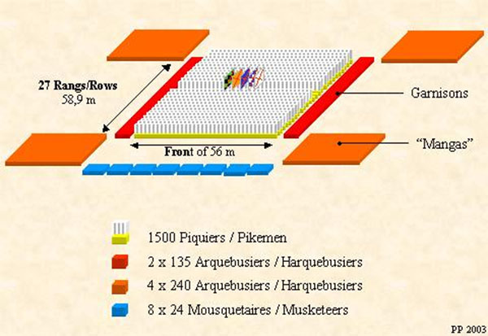

The Future.
While the formidable Black Army fights skirmishes in Silesia, Bohemia, and Poland the Turkish Juggernaut continues to push North. The Venetian fleet has been steadily losing "ground" providing the ability for the Ottoman fleet to support the campaign along the Adriatic Sea.
The Egyptians are unlike to confront Ottoman naval forces now that the Venetian pressure has declined. Ivan has dealt the remenants of the the Great Horde several devestating blows and the remainder of Muscovy's attention is focused on the crumbling Republic of Novgorod.
The lack of support against the Turkish is a truely frightening trend. It will allow their tributary states--such as the Khanate of Crimea--to make forays further afield, granting their suzerain the freedom to consolidate forces in Eastern and Central Europe.
Unless the Hungarian usurper can bring closure to the northern and western fronts, it is unlikely that even the Black Army will be able to stem the Turkish tide. If Vienna falls under siege then Christiandom will be in dire straights.
A diagram of a Spanish Tercio
A more detailed description of the tercio and its impact may be found here.
IVAN III DEMANDS FEALTY FROM MONGOL KHANATES
SWISS MILITARY MOBILIZING FOR WAR
POPE SIXTUS IV ISSUES NEW PROCLIMATION
PORTUGESE NAVY SEIZES ANOTHER MOROCCAN HARBOR TOWN
WAR OF THE ROSES NEARS CLOSE AFTER DECISIVE BATTLE